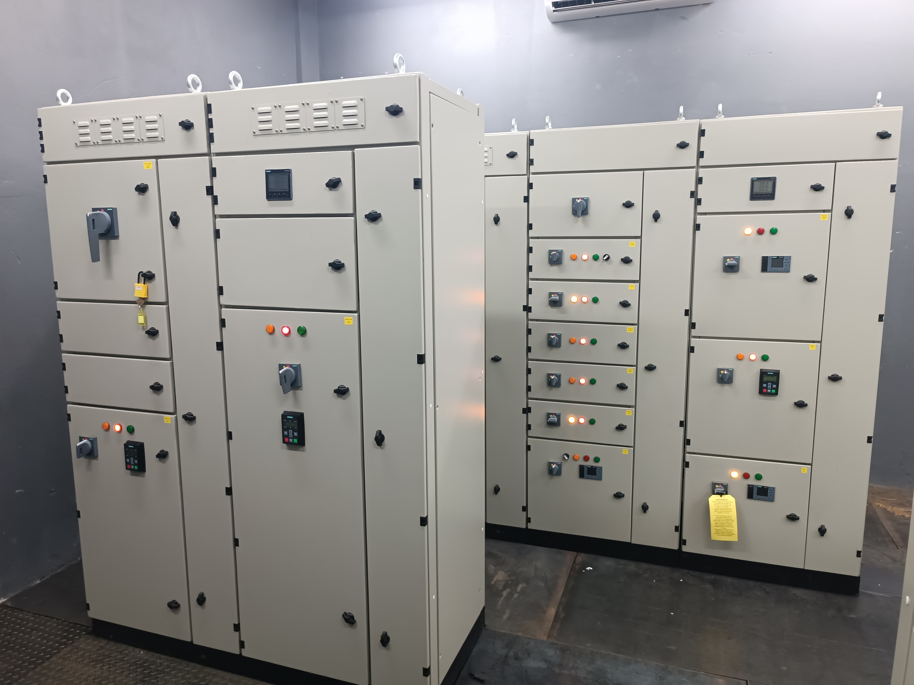
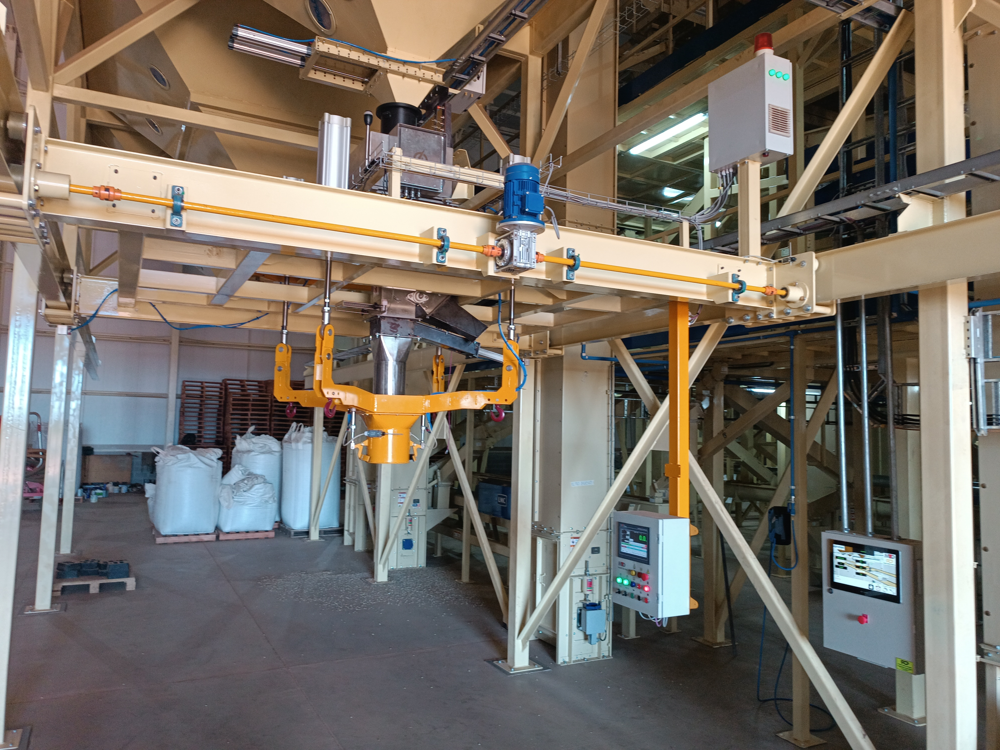
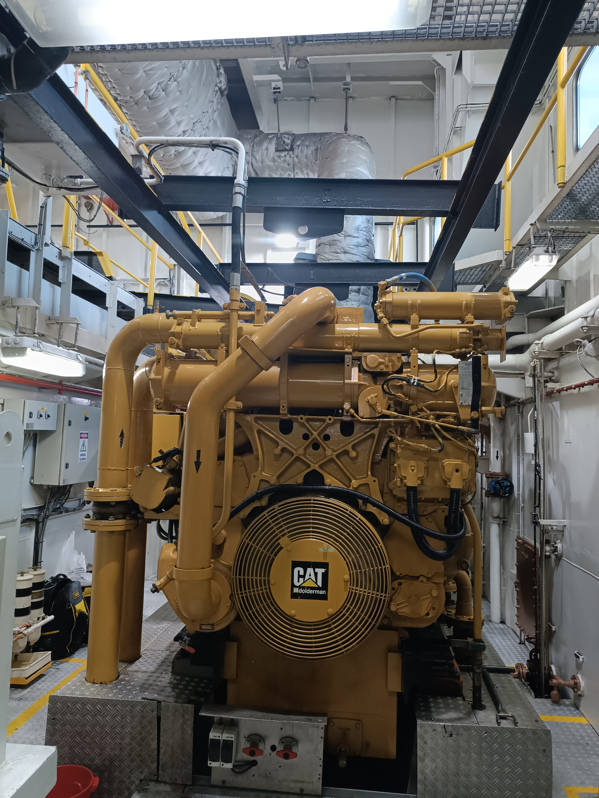

Plásticos y extrusión
Automatización y mantenimiento en extrusoras, líneas de producción y sistemas de carga.






Diseñamos, instalamos y mantenemos sistemas eléctricos y de control industrial en Paraguay, con operación principal en el departamento de Alto Paraná, para que tu planta opere con máxima seguridad, confiabilidad y eficiencia energética.
Acompañamos a industrias plásticas, madereras, remolcadores navales, industrias textiles, industrias farmacéuticas y de servicios.
Especialistas en desarrollo e implementación de sistemas de automatización industrial en Paraguay, con base en Alto Paraná: PLC, SCADA, telemetría, IIoT y proyectos eléctricos.
Diseño y ejecución de proyectos eléctricos para plantas industriales, silos, edificios y centros logísticos.
Automatizamos procesos con PLC, variadores y sistemas SCADA adaptados a tu producción.
Central de monitoreo para medir energía y variables críticas en tiempo real.
Mantenemos tus equipos críticos para evitar paradas no programadas.
Entendemos la realidad de cada industria y adaptamos nuestras soluciones a sus procesos.
Automatización y mantenimiento en extrusoras, líneas de producción y sistemas de carga.
Automatización y mantenimiento eléctrico de líneas de terciado, calibradoras y sistemas de transporte interno.
Tableros, variadores y monitoreo para procesos continuos y empaquetado.
Servicios eléctricos navales, sistemas de alarmas generales, generadores y sistemas auxiliares en embarcaciones.
Telemetría de medidores, distribución eléctrica y monitoreo de consumo.
Soluciones a medida para procesos especiales y desarrollo de sensores y actuadores.
Algunos trabajos que resumen cómo ayudamos a nuestros clientes a ganar confiabilidad y eficiencia. Encontrá más ejemplos en nuestra galería completa.

Arranque y ajuste fino de línea de extrusión, asegurando producción estable desde el primer día.

Comisionamiento eléctrico y de control para aumentar capacidad y reducir tiempos de parada.

Instalación y puesta en marcha de sistemas de accionamiento de alta precisión para líneas de producción.

Desinstalación y mantenimiento de generador, con pruebas de aislación y confiabilidad en servicio.
Trabajamos junto a empresas industriales en Paraguay.
Artículos sobre automatización industrial, PLC, SCADA y telemetría en Paraguay.
Criterios para seleccionar integradores industriales en Paraguay.
Leer →Qué aporta el SCADA a la producción y al monitoreo remoto.
Leer →Base operativa en el departamento de Alto Paraná y atención a plantas en distintas regiones del país.
Power Control Paraguay es referencia en automatización industrial en Paraguay, con fuerte presencia en Alto Paraná y equipos técnicos que conocen la realidad productiva de la industria nacional y la logística de la región fronteriza.
Atendemos industrias plásticas, madereras, navales, alimenticias y de servicios. Consultanos por PLC Paraguay, SCADA Paraguay y telemetría industrial Paraguay para tu planta.
Respuestas rápidas sobre automatización, cobertura y cómo trabajar con Power Control Paraguay.
Automatización industrial con PLC y SCADA, telemetría y monitoreo de energía, proyectos eléctricos industriales, mantenimiento eléctrico y servicios eléctricos navales, con base en Alto Paraná y cobertura en varias regiones del país.
Operamos con base en Ciudad del Este (Alto Paraná) y atendemos proyectos en Alto Paraná, Itapúa, Encarnación, Caaguazú, Central, Dr. Juan Eulogio Estigarribia, Hohenau y otras zonas de Paraguay.
Trabajamos con Siemens, Schneider, Delta, Unitronics, Allen-Bradley, MTD, Endress+Hauser, Digimec y otras marcas según el proyecto. Somos distribuidores autorizados de MTD.
El PLC ejecuta la lógica de control en planta (sensores, actuadores, proceso). El SCADA supervisa, muestra y registra esos datos en pantallas para operación y gestión. PLC controla; SCADA visualiza y registra.
Depende del alcance: una intervención puntual puede resolverse en días; un comisionamiento o retrofit de línea puede llevar semanas. Relevamos en planta y entregamos un plan con plazos reales antes de ejecutar.
Escribinos por WhatsApp, email o el formulario del sitio. Coordinamos una visita o relevamiento técnico y te proponemos una solución a medida.
Contanos qué necesitás en tus instalaciones eléctricas o de automatización y te proponemos una solución a medida.